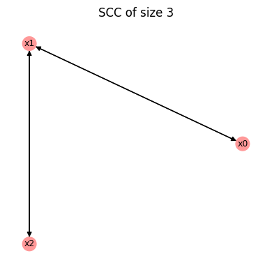
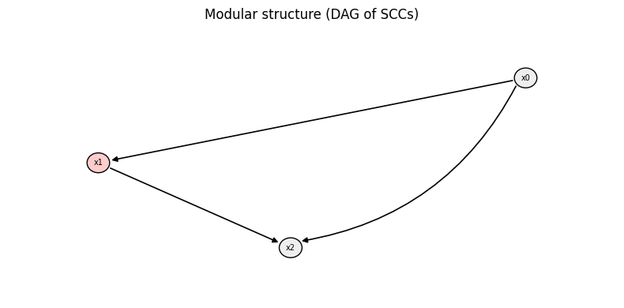
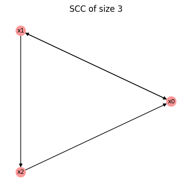
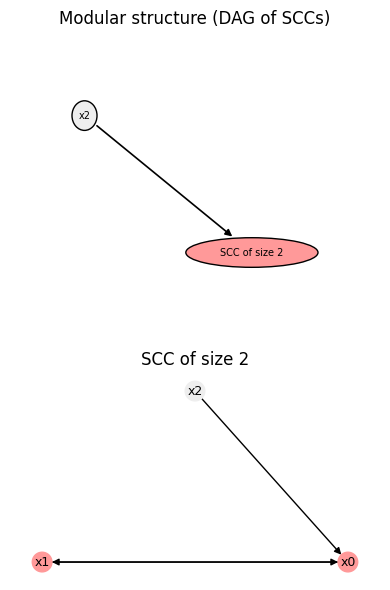

Working with Boolean Networks
While previous tutorials focused on individual Boolean functions, this tutorial introduces Boolean networks, which combine multiple Boolean functions into a dynamical system.
What you will learn
In this tutorial you will learn how to:
create Boolean networks,
compute basic properties of the wiring diagram,
compute basic properties of Boolean networks.
Setup
[1]:
import boolforge as bf
import numpy as np
Boolean network theory
A Boolean network \(F = (f_1, \ldots, f_N)\) is a dynamical system consisting of \(N\) Boolean update functions. Each node can be in one of two states, 0 or 1, often interpreted as OFF/ON in biological contexts.
Under synchronous updating, all nodes update simultaneously, yielding a deterministic state transition graph on \(\{0,1\}^N\). Under asynchronous updating, only one node is updated at a time, yielding a stochastic transition graph. BoolForge implements both schemes.
Real biological networks are typically sparsely connected. The in-degree of a node is the number of essential inputs of its update function. The wiring diagram encodes which nodes regulate which others.
Despite their simplicity, Boolean networks can:
reproduce complex dynamics (oscillations, multistability),
predict gene knockout effects,
identify control strategies,
scale to genome-wide networks (1000s of nodes).
Wiring diagrams
We first construct wiring diagrams, which encode network structure independently of specific Boolean functions. Separating topology (encoded in BoolForge by I) from dynamics (F) allows:
studying structural properties independent of specific Boolean rules,
swapping different rule sets on the same topology,
efficient storage (sparse I, local F vs dense full truth table).
[2]:
# Wiring diagram of a 3-node network
I = [
[1],
[0, 2],
[1],
]
W = bf.WiringDiagram(I=I)
print("W.N:", W.N)
print("W.variables:", W.variables)
print("W.indegrees:", W.indegrees)
print("W.outdegrees:", W.outdegrees)
fig = W.plot(show=False);
W.N: 3
W.variables: ['x0' 'x1' 'x2']
W.indegrees: [1 2 1]
W.outdegrees: [1 2 1]

The wiring diagram above consists of \(N=3\) variables, and uses default variable names \(x_0, \ldots, x_{N-1}\). The vectors indegrees and outdegrees describe the number of incoming and outgoing edges for each node.
Example with constants and unequal degrees
The next wiring diagram contains a constant node (source) \(x_0\) and a node that is only regulated but does not regulate any nodes (sink) \(x_2\).
[3]:
I = [
[],
[0],
[0, 1],
]
W = bf.WiringDiagram(I=I)
print("W.N:", W.N)
print("W.variables:", W.variables)
print("W.indegrees:", W.indegrees)
print("W.outdegrees:", W.outdegrees)
fig = W.plot(show=False)
W.N: 3
W.variables: ['x0' 'x1' 'x2']
W.indegrees: [0 1 2]
W.outdegrees: [2 1 0]

This wiring diagram encodes a feed-forward loop, one of the most common network motifs in transcriptional networks. It can:
filter transient signals (coherent FFL with AND gate),
accelerate response (incoherent FFL),
See Mangan & Alon, PNAS, 2003 for a detailed analysis. BoolForge enables the identification of all feed-forward loops:
[4]:
print("W.get_ffls()", W.get_ffls())
W.get_ffls() {'FFLs': [[0, 1, 2]]}
This tells us that W contains one FFL, in which \(x_0\) regulates both \(x_1\) and \(x_2\), while \(x_2\) is also regulated by \(x_1\).
BoolForge can also identify all feedback loops. For this, we consider another wiring diagram:
[5]:
I2 = [
[2,1],
[0],
[1],
]
W2 = bf.WiringDiagram(I=I2)
fig = W2.plot(show=False)
fig
print("W2.get_fbls()", W2.get_fbls())
W2.get_fbls() {'FBLs': [[0, 1, 2], [0, 1]]}

The function .get_fbls() identifies all simple cycles in the wiring diagram. In this case, there exists a 2-cycle \(x_0 \leftrightarrow x_1\) and a 3-cycle \(x_0 \to x_1 \to x_2 \to x_0\).
Creating Boolean networks
To create a Boolean network, we must specify:
A wiring diagram
I, describing who regulates whom.A list
Fof Boolean update functions (or truth tables), one per node.
[6]:
I = [
[1],
[0, 2],
[1],
]
F = [
[0, 1],
[0, 1, 1, 1],
[0, 1],
]
bn = bf.BooleanNetwork(F=F, I=I)
print(bn.to_truth_table().to_string())
x0(t) x1(t) x2(t) x0(t+1) x1(t+1) x2(t+1)
0 0 0 0 0 0 0
1 0 0 1 0 1 0
2 0 1 0 1 0 1
3 0 1 1 1 1 1
4 1 0 0 0 1 0
5 1 0 1 0 1 0
6 1 1 0 1 1 1
7 1 1 1 1 1 1
BoolForge never stores this object explicitly. Instead, a Boolean network is represented internally by its wiring diagram I and the list of update functions F, which is far more memory-efficient – especially for sparse networks with few regulators per node.When a Boolean network is constructed from F and I, BoolForge automatically performs a series of consistency checks to guard against common modeling errors. For example, it verifies that each update function has the correct length, namely \(2^n\), where \(n\) is the number of regulators of the corresponding node as specified in I. If any of these checks fail, an informative error is raised immediately, helping ensure that the resulting network is well-defined.
Creating networks from strings
Alternatively, Boolean networks can be specified using a human-readable string representation, where each line defines the update rule of one node. This format closely mirrors the way Boolean models are written in the literature and is often more convenient than manually specifying wiring diagrams and truth tables.
In the example below, each line has the form \(x_i = f_i(\text{regulators of } x_i),\) where Boolean operators such as AND, OR, and NOT can be used to define the update functions.
[7]:
string = """
x = y
y = x OR z
z = y
"""
bn_str = bf.BooleanNetwork.from_string(string, separator="=")
print(bn_str.to_truth_table().to_string())
x(t) y(t) z(t) x(t+1) y(t+1) z(t+1)
0 0 0 0 0 0 0
1 0 0 1 0 1 0
2 0 1 0 1 0 1
3 0 1 1 1 1 1
4 1 0 0 0 1 0
5 1 0 1 0 1 0
6 1 1 0 1 1 1
7 1 1 1 1 1 1
Here, the update rule x = y specifies that node x copies the state of y, while y = x OR z indicates that node y becomes activated (1) whenever x, or z, or both are active.
From this symbolic description, BoolForge automatically:
extracts the wiring diagram,
determines the regulators of each node,
constructs the corresponding Boolean update functions.
Internally, the string representation is converted into the same (F, I) representation used throughout the package. As a result, Boolean networks created from strings behave identically to those created explicitly from wiring diagrams and truth tables.
This interface is particularly useful for loading Boolean network models from external sources, such as .bnet files, or for quickly prototyping models in an interactive setting.
Interoperability with CANA
BoolForge provides native interoperability with the `CANA package <https:www.github.com/CASCI-lab/CANA>`__ for the analysis of Boolean functions and Boolean networks. Existing BoolForge networks can be converted into CANA objects and back without loss of information.
In the example below, we convert a BoolForge Boolean network into its CANA representation using to_cana(), and then reconstruct a new BoolForge Boolean network from that CANA object.
The final assertion verifies that this round-trip conversion preserves:
the Boolean update functions,
the wiring diagram,
and the variable names.
This guarantees that BoolForge and CANA can be used interchangeably within a workflow, allowing users to leverage CANA’s analytical tools while continuing to build and manipulate models using BoolForge.
[8]:
cana_bn = bn.to_cana()
bn_from_cana = bf.BooleanNetwork.from_cana(cana_bn)
assert (
np.all([np.all(bn.F[i].f == bn_from_cana.F[i].f) for i in range(bn.N)])
and np.all([np.all(bn.I[i] == bn_from_cana.I[i]) for i in range(bn.N)])
and np.all(bn.variables == bn_from_cana.variables)
), "BooleanNetwork CANA conversion failed"
Types of nodes in Boolean networks
Nodes in a Boolean network can be classified as follows:
Constant nodes Nodes with constant update functions (always 0 or always 1). These nodes act as parameters and are removed internally, with their values propagated through the network.
Identity nodes Nodes whose update function is the identity, i.e., \(f(x_i) = x_i.\) Their value is determined by the initial condition and remains constant over time. Identity nodes are retained as part of the Boolean network state. They may be viewed as nodes with a self-loop and no other incoming edges.
Regulated nodes Nodes whose update functions depend on one or more other nodes.
[9]:
F = [
[0, 0, 0, 1], # regulated
[0, 1, 1, 1], # regulated
[0, 1], # identity
[0], # constant
]
I = [
[1, 2], # regulated
[0, 3], # regulated
[2], # identity
[], # constant
]
bn = bf.BooleanNetwork(F, I)
print("bn.variables:", bn.variables)
print("bn.constants:", bn.constants)
print("bn.I:", bn.I)
print("bn.F:")
for i, f in enumerate(bn.F):
print(f" F[{i}] = {f!r}")
bn.variables: ['x0' 'x1' 'x2']
bn.constants: {'x3': 0}
bn.I: [array([1, 2]), array([0]), array([2])]
bn.F:
F[0] = BooleanFunction(name='x0', f=[0, 0, 0, 1])
F[1] = BooleanFunction(name='x1', f=[0, 1])
F[2] = BooleanFunction(name='x2', f=[0, 1])
The constant node is removed, and its value is propagated into downstream update functions.
If we now change the value of the constant node from 0 to 1, the network is constructed in the same way, and the constant value 1 is substituted directly into all downstream update functions, before removal of the constant node.
As a result, the Boolean update functions of downstream nodes may simplify, potentially reducing the number of regulators or changing the logical form of the function. This illustrates how constant nodes act as parameters whose values influence the effective dynamics of the network.
Importantly, this simplification is performed symbolically at construction time and does not depend on the dynamical evolution of the network.
[10]:
F = [
[0, 0, 0, 1],
[0, 1, 1, 1],
[0, 1],
[1],
]
I = [
[1, 2],
[0, 3],
[2],
[],
]
bn = bf.BooleanNetwork(F, I)
print("bn.variables:", bn.variables)
print("bn.constants:", bn.constants)
print("bn.I:", bn.I)
print("bn.F:")
for i, f in enumerate(bn.F):
print(f" F[{i}] = {f!r}")
bn.variables: ['x0' 'x1' 'x2']
bn.constants: {'x3': 1}
bn.I: [array([1, 2]), array([0]), array([2])]
bn.F:
F[0] = BooleanFunction(name='x0', f=[0, 0, 0, 1])
F[1] = BooleanFunction(name='x1', f=[1, 1])
F[2] = BooleanFunction(name='x2', f=[0, 1])
Although \(x_1\) becomes fixed at 1 after one update, it is not treated as a constant node. In BoolForge, constant nodes are identified by their update functions (always 0 or always 1), not by their long-term dynamical behavior. Since \(x_1 = 0\) remains a valid initial condition, the node is retained as part of the network state.
Boolean network properties
The class BooleanNetwork inherits basic structural properties and methods from WiringDiagram. In particular, all graph-theoretic attributes of the wiring diagram – such as the number of nodes, in-degrees, and out-degrees – are directly accessible on a Boolean network object.
Moreover, BooleanNetwork inherits visualization utilities from WiringDiagram, including methods for plotting the wiring diagram and its modular structure, using .plot(). This allows users to inspect the topology of a Boolean network independently of the specific update functions.
Beyond these inherited features, BooleanNetwork provides a rich collection of additional methods for analyzing the dynamics, structure, and control properties of Boolean networks. These include functionality for:
computing fixed points and attractors,
analyzing transient dynamics and state transition graphs,
studying robustness and sensitivity to perturbations,
performing node and edge interventions.
Many of these methods will be introduced and discussed in detail in the following tutorials. Here, we focus only on a few basic and commonly used properties.
[11]:
print("bn.N:", bn.N)
print("bn.indegrees:", bn.indegrees)
print("bn.outdegrees:", bn.outdegrees)
print("bn.variables:", bn.variables)
bn.plot();
bn.N: 3
bn.indegrees: [2 1 1]
bn.outdegrees: [1 1 2]
bn.variables: ['x0' 'x1' 'x2']

Just like BooleanFunction objects, BooleanNetwork possesses a.summary() method, which prints a human-readable overview of basic properties. If more advanced properties have already been computed, e.g., attractors, this information is also displayed (or if the optional keyword compute_all is set to True, default False).
[12]:
print(bn.summary())
print()
print(bn.summary(compute_all=True)) #or simply print(bn.summary(True))
BooleanNetwork
--------------
Number of nodes: 3
Number of regulated nodes: 2
Number of identity nodes: 1
Number of constants (removed):1
Average degree: 1.333
Largest in-degree: 2
Largest out-degree: 2
Regulated nodes: ['x0', 'x1']
Identity nodes (inputs): ['x2']
Constants: {'x3': 1}
BooleanNetwork
--------------
Number of nodes: 3
Number of regulated nodes: 2
Number of identity nodes: 1
Number of constants (removed):1
Average degree: 1.333
Largest in-degree: 2
Largest out-degree: 2
Regulated nodes: ['x0', 'x1']
Identity nodes (inputs): ['x2']
Constants: {'x3': 1}
Number of attractors: 2
Largest basin size: 0.500
Basin size entropy: 0.693
Derrida value: 0.667
Coherence: 0.667
Fragility: 0.222
The more advanced properties displayed here are the subject of the next two tutorials.
Outlook
In the remaining tutorials, we build on this foundation to study the dynamical behavior of Boolean networks, including attractors, basins of attraction, and stability under perturbations.